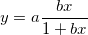
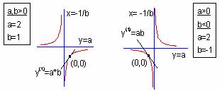

直角双曲線関数
参考文献: Ratkowksy, David A. 1990. Handbook of Nonlinear Regression Models. Marcel Dekker, Inc. 4.2.16

パラメータの数: 2
パラメータの名前: a, b
意味: a = 係数, b = 係数
下側境界: なし
上側境界: なし
nlf_recthyperbola(x,a,b)
FITFUNC\RECTHYPB.FDF
Hyperbola